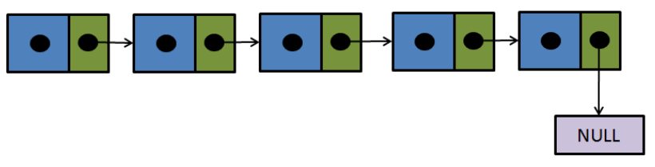
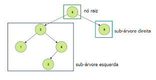

ESTRUTURA DE DADOS
Sets (Conjuntos):
A classe array do JavaScript pode funcionar com coleção ordenada de dados, mas não tão bem com coleções não ordenadas, ou quando os valores mantidos na coleção são únicos. É por isso que o JavaScript introduziu o Set.
Set é uma coleção única de tipos primitivos e objetos, e duplicatas não são permitidas. Assim, podemos criar um conjunto vazio e adicionar objetos, ou podemos inicializar um conjunto com o conteúdo de um iterável (como um array).
Essa estrutura de dados é considerada como “coleção com chaves” (keyed collection). Coleções com chaves são, como o nome já diz, coleções que usam chaves. Estas coleções contêm elementos que são iteráveis na ordem de inserção. Portanto, são como um dicionário de idiomas, em que a busca se dá por palavras, que são os valores que buscamos, e não pela ordem dos significados.
Listas encadeadas:
Uma lista encadeada é uma coleção linear de elementos (ou nós), em que a ordem linear não é dada por sua localização física na memória. Em vez disso, cada elemento aponta para o próximo (um ponteiro).
É uma estrutura de dados consistindo em um grupo de nós que juntos representam uma sequência. Sob a forma mais simples, cada nó é composto de dados e uma referência (ligação/conexão) para o próximo nó na sequência. Esta estrutura permite uma eficiente inserção e remoção de elementos de qualquer posição na sequência durante a iteração.
Filas:
Sabe aquela fila que você pega (ou pegava) nos totens dos bancos? Pense um pouquinho como é o processo de entrada de pessoas. Outro exemplo é o buffer de carregamento dos vídeos do Youtube - ele é carregado por partes e do inicio para o final e assim que o vídeo é assistido as primeiras partes são entregues e saem para dar entrada a novas partes do carregamento.
Uma fila é um tipo abstrato de dados ou coleção em que as suas entidades são mantidas em ordem. As principais (ou únicas) operações na coleção são a adição de entidades à última posição, conhecida como enfileiramento (queue), e remoção de entidades da primeira posição, conhecida como desenfileiramento (dequeue).
Isso torna a fila uma estrutura de dados First-In-First-Out (FIFO). Em uma estrutura de dados FIFO, o primeiro elemento adicionado à fila será o primeiro a ser removido.
Isso é equivalente ao requisito de que, uma vez que um novo elemento seja adicionado, todos os elementos que foram adicionados antes devem ser removidos antes que o novo elemento possa ser removido.

Pilhas:
Uma pilha é um tipo abstrato de dados ou coleção em que as suas entidades são mantidas em ordem. As principais (ou únicas) operações na coleção são as de adição de entidades à última posição, conhecida como push, e remoção de entidades da última posição, conhecida como pop. Isso torna a pilha uma estrutura de dados Last-In-First-Out (LIFO).
Em uma estrutura de dados LIFO, o último elemento adicionado à pilha será o primeiro a ser removido. O nome "stack" para este tipo de estrutura vem da analogia de um conjunto de itens físicos empilhados uns sobre os outros, o que facilita retirar um item do topo da pilha, enquanto que, por outro lado, para chegar a um item mais profundo na pilha é necessário a retirada de vários outros itens primeiro. Exemplo abaixo:
 Torre de Hanoi
Torre de Hanoi
Árvores Binárias:
Uma árvore é uma estrutura de dados abstrata, amplamente utilizada, que simula uma estrutura hierárquica de árvore (de ponta-cabeça), com valor raíz e sub-árvores de filhos com um nó pai que é representado como um conjunto de nós conectados.
Analogia: Pense na estrutura de pastas do seu PC. Essa estrutura tem pastas na raiz e subpastas e mais subpastas... Assim por diante, como uma árvore.
Uma estrutura de dados em árvore pode ser definida recursivamente como uma coleção de nós (começando no nó raiz), onde cada nó é uma estrutura de dados consistindo de um valor, junto com uma lista de referências a outros nós (os "filhos"), com as restrições de que nenhuma referência é duplicada e nenhuma aponta para a raiz.
Observe que na imagem acima a representação coloca os números maiores à direita e os números menores à esquerda. Inclusive com os filhos. Logo se eu quiser fazer uma busca ela é otimizada. Suponhamos que eu queira fazer uma busca do valor '4' nessa árvore (imagem acima), que tem como raiz o número 6. Logo a busca será otimizada devido ao fato que a busca ira acontecer para a esquerda, sabendo-se que o nº 4 é menor que o nó raiz nº 6.